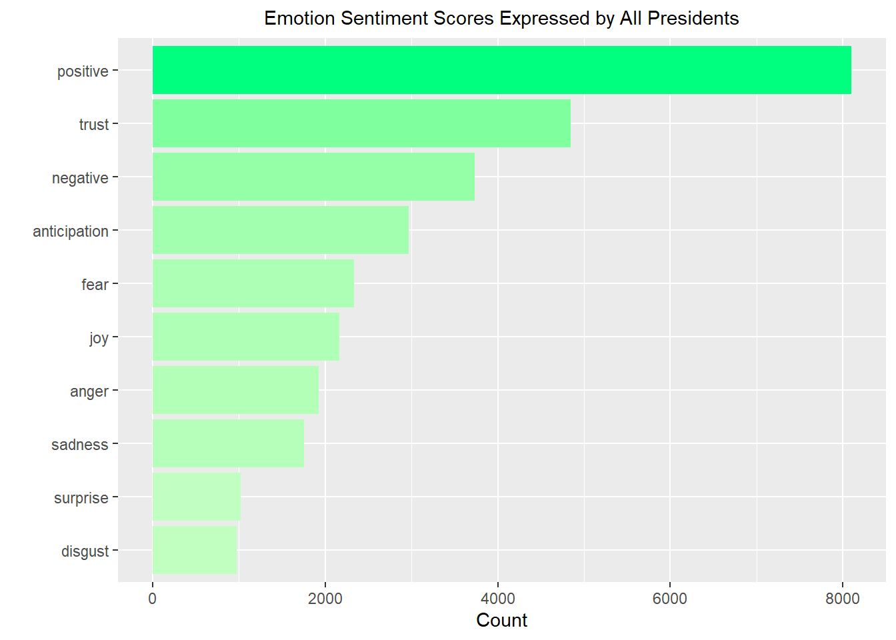
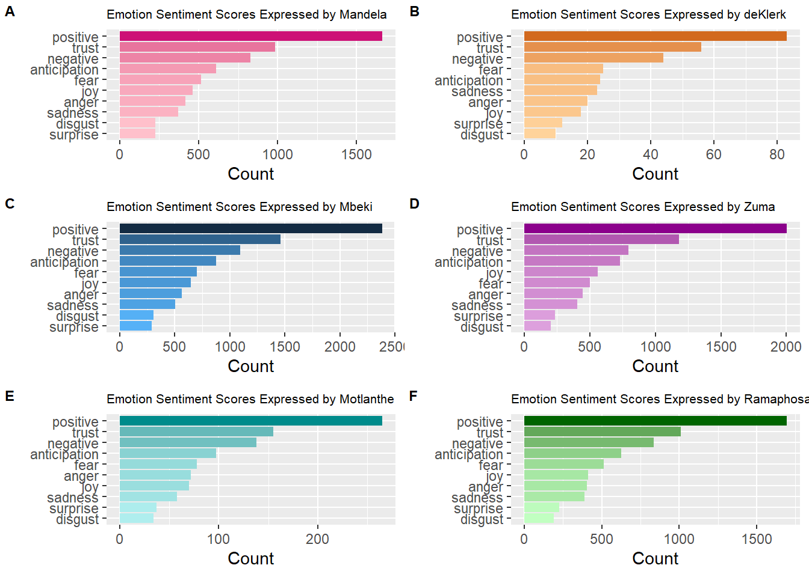
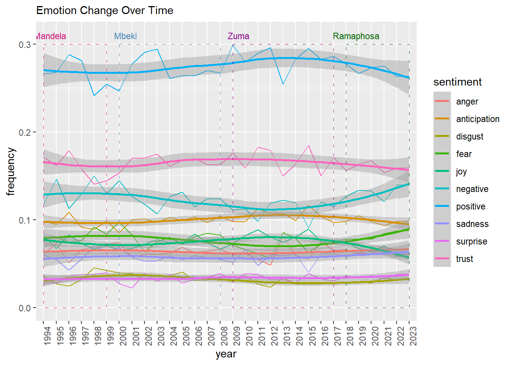

A Descriptive Analysis of Presidential SONA Addresses in South Africa - 1994 to 2023
Abstract
Summary of motivation and outcome. Start with context, task and object, finish with findings and conclusion. This is written last.
Introduction
The State of the Nation Address (SONA) is a crucial annual event in the political landscape of South Africa. It serves as a comprehensive summary of the nation’s current status and a roadmap for its future. The address, delivered by the country’s highest-ranking official, outlines achievements, priorities, and strategies for the upcoming year, significantly influencing policy, legislation, and public discourse.
This research paper, undertakes a comprehensive descriptive examination of the content within South African State of the Nation Addresses (SONAs), employing advanced techniques in sentiment analysis and topic modeling. Sentiment analysis allows for the extraction and quantification of emotional and attitudinal tones within the speeches, providing deeper insights into the language used by leaders to engage, motivate, and influence their audience. Understanding prevailing sentiments also offers valuable context for assessing the reception and impact of the SONA.
Furthermore, topic modeling enables the categorization of the diverse subjects addressed within these speeches. This approach clarifies the key areas of government focus and the shifting priorities as they evolve over time. It not only aids in identifying primary trends but also provides a quantitative basis for comparisons between different presidencies.
A comprehensive explanation of sentiment analysis and topic modeling, including a breakdown of their methodologies and an examination of the results as applied to the analysis of South African SONAs are presented in relevant sections within this report.
Brief overview of the dataset
The dataset used in this study comprised of speeches obtained from various text files, each of differing sizes. These speeches were presented in a semi-formal structure, with a common characteristic being the inclusion of the date of delivery at the beginning. Additionally, it is expected that the data may include regular expressions, given that the data consists of raw speeches from the presidents.
The data is not inherently structured in a manner conducive to automated tabulation and analysis. Therefore, preprocessing steps were necessary to facilitate subsequent analysis. Detailed information regarding the preprocessing procedures is provided in the following section.
Data pre-processing and cleaning
Overall Analysis
Sentiment
Summary of data-set and data cleaning methods used. How the data was read in, parsed.
Sentiment Analysis
Summary of tools used for sentiment analysis (R packages), how data was pre-processed for sentiment analysis, and techniques used.
Bing lexicon
Nrc lexicon
This report also employs the NRC Emotion Lexicon for sentimental analysis, a resource that associates English words with eight fundamental emotions (anger, fear, anticipation, trust, surprise, sadness, joy, and disgust), along with two sentiments (negative and positive). This lexicon was used to analyse the emotions expressed in presidential speeches, providing insights into the emotional aspects of their leadership and communication.
Score of Emotions Expressed by all Presidents
The emotions expressed by leaders are often influenced by their communication goals, the specific context of their speeches, and their personal leadership style. The top three emotions expressed by all presidents, as shown by figure 1, are trust, anticipation and joy. This is expected as leaders often aim to inspire confidence and trust in their followers. Expressing trust can help leaders gain the support and loyalty of their constituents. Leaders also use anticipation to create a sense of excitement, hope, and forward-looking optimism. This emotion can motivate people to support a leader’s vision or initiatives. Joy is usually expressed as leaders celebrate achievements, milestones they have accomplished.
Emotion Scores Expressed By Individual Presidents

The emotional scores of each of the six presidents closely mirror the patterns shown in Figure 1. This suggests that the speeches of all presidents generally convey similar emotions. The distinctions become evident in two instances, when the lower sections of the charts are examined, where the least frequently expressed emotions lie and between the chart for president deKlerk and all the other presidents. President Mandela and President Mbeki display a higher count of “disgust” compared to “surprise” in their speeches, whereas the other presidents express more “surprise” than “disgust.” This variation can be attributed to the historical context of their respective presidencies. President Mandela and President Mbeki served shortly after the end of apartheid, a period marked by addressing morally reprehensible actions and situations. Consequently, their speeches may have conveyed a greater sense of “disgust” when addressing such issues, reflecting a strong stance against unethical behaviour. President de Klerk expressed a heightened level of fear in comparison to the other presidents, and this can be linked to the unique historical context of his presidency as well. It is noteworthy that President de Klerk’s tenure coincided with the final stages of apartheid in South Africa.
Emotions Expressed Over-time

In Figure 3, we observe the evolution of emotional dynamics over time. Notably, there is a distinct upswing in the expression of positive emotions, particularly from 2009 when President Zuma assumed office. This trend potentially signifies President Zuma’s leadership style, which may have prioritized positivity, unity, and motivation. Alternatively, it could imply that his speeches served as a means of crisis management, offering reassurance to the public and reinforcing the notion of stability and control during challenging times. We can observe a significant increase in negative emotions during the time frame spanning 2021 to 2023, marked notably by heightened expressions of fear and sadness. This trend can be traced back to the profound global impact of the novel coronavirus, which affected nations worldwide in 2020.
Review: Using ChatGPT as a Large Language Model
Large Language Models (LLMs) are sophisticated artificial intelligence tools that assist with numerous tasks, such as compiling, processing, and writing reports, such as this one. ChatGPT, in particular, has shown remarkable capabilities in assisting with such tasks, and so it was used to assist with completing this task and the following is a detailed review of the experience.
Prompting for Writing:
When it came to the writing process, ChatGPT excelled when it was provided with detailed descriptions of what was required, often in concise bullet points. This structured approach allowed ChatGPT to address each point systematically. While it usually produced well-structured and coherent content, minor human adjustments were occasionally necessary for optimal results.
Its performance deteriorated when clear and detailed instructions were not provided. In such cases, the results were less satisfactory, very generalized and often necessitated additional prompting or fine-tuning.
Prompting for Coding:
In the realm of coding, ChatGPT proved to be a valuable resource for understanding and debugging errors. When presented with coding errors, it demonstrated an impressive accuracy rate of identifying the root cause of the issue.
Furthermore, for simpler or common coding exercises, ChatGPT typically provided effective solutions on the first attempt. However, it’s with more complex coding problems, even when prompts were tuned, ChatGPT struggled to produce correct answers. This is perhaps indicative of the limitations of current AI models in handling intricate coding challenges.
Prompting for Facts and Definitions:
ChatGPT delivered accurate facts and definitions when prompted. However, due diligence remained essential, as the information provided was cross-checking for precision.
One remarkable aspect of ChatGPT was its ability to explain topics comprehensively, providing definitions that allowed for a solid understanding of the subject matter. It excelled in generating examples and rephrasing information in simpler terms, which greatly aided in achieving a clear and thorough comprehension of the topics it addressed.
In summary, ChatGPT has proven to be a valuable tool for a variety of tasks, particularly in the realm of report compilation, coding assistance, and knowledge provision. While it excels with well-defined and detailed prompts, its limitations become apparent when instructions are less clear or when confronted with intricate coding challenges. Nevertheless, ChatGPT’s capabilities in simplifying complex concepts and generating good quality written content offer significant value in a variety of applications.